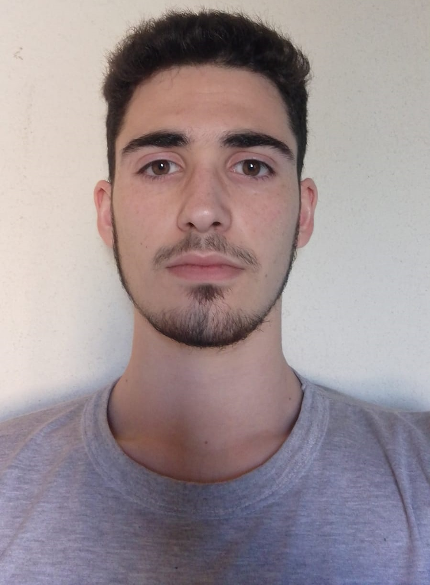

Descripción Personal
Soy Santiago Amallo, nací el 27 de septiembre de 2002, en Capital Federal, Buenos Aires. Mi interes por la informática comenzo a la corta edad de 8 años, cuando mi padre me mostró el juego Age Of Empires 2 en su PC, desde entonces me obsesione con la idea de aprender más sobre las computadoras y poder recrear lo que veia por mis propios medios. Luego de terminar mis estudios secundarios en la escuela secundaria técnica E.S.E.T.P. N°724, ingrese a SoyHenry para poder logar mis objetivos con la informática.
Educación
Escuela Primaria Normal N°8 (1ro a 4to), CABA, Buenos Aires.
Calificación media de 8,75.
Escuela Primaria Las Victorias (5to a 6to), Gualeguaychú, Entre Ríos.
Calificación media de 9,25. Medallas recibidas: Mejor compañero y
medalla dorada (honestidad y responsabilidad).
Escuela Secundaria ESETP N°724, Trelew, Chubut.
Calificación media de 8,5. Recibido de Técnico Informático.
Universidad del Chubut, Rawson, Chubut.
Certificado de Programación de Apps con Sketchware.
Experiencias Laborales
01/01/2021-01/03/2021
Boletero • Teatro El Mar • Tony Amallo Producciones
01/10/2021-15/12/2021
Técnico y Secretario • Teatro San David • Tony Amallo Producciones
04/05/2019-21/12/2021
Editor • Canal 7 • HiperConectados
20/02/2022-27/02/2022
Bartender • La Parada
03/07/2020-Actualidad
Asistente de producción • LU 20 y Radio 3 • HiperConectados de Radio • HiperConectados de TV
Skills
• Responsable.
• Capacidad de trabajo en equipo y en solitario.
• Uso de computadores avanzado.
• Capacidad de actualizar los conocimientos
• Capacidad de escucha.
• Estado de ánimo positivo.
Hobbies
• Practicar guitarra
• Teatro
• Gimnasio
• Dibujar
• Leer
• Escribir
¿Por qué estás estudiando esta carrera?
Estoy estudiando esta carrera porque me interesa el desarrollo web. Me gusta la idea de generar un producto como una página y que sea parte del Internet.
Expectativas
Mis expectativas al finalizar la carrera es la de convertirme en un desarrollador web con fácilidad para el desarrollo web, con una gran lienzo de proyectos terminados, que me permitan buscar trabajo y aumentar mis habilidades.